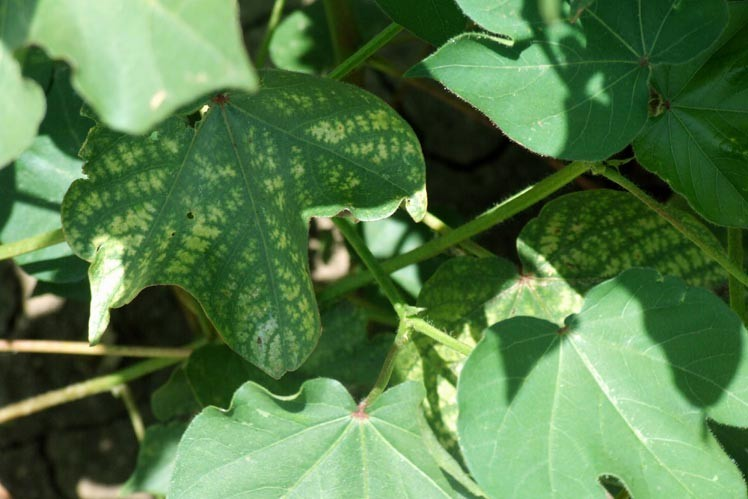

Photosynthesis (from http://pages.uindy.edu/~sdavis/b165/homework/photsynthesis.htm)
A case study investigating photosynthesis: In this case study, you will investigate photosynthetic inhibitors and how they interfere with photosynthesis. This activity will give you an understanding of how photosynthesis normally works.
Heidi has become interested in gardening. She has planted a small potted garden in her dorm room, but she is distressed because her garden will not grow. She waters the plants every few days, just like the gardening books say. She has placed them near the window to get light; but her roommate, Mary, insists on keeping a translucent green curtain in the window. Mary wants to keep the curtain closed because she likes to sleep late, and she often forgets to open it when leaving for class. Heidi hasn't made a big deal about it because it is translucent and lets some light through.
One morning, Heidi asks Mary to stop at Pike's Nursery to buy some fertilizer on her way home from work. Mary replies that she can save Heidi some money by getting some fertilizer from her dad's storage shed when she goes home the next weekend. Mary's dad is a corn farmer and has all the best plant products. When Mary returns from home, she brings Heidi a bit of fertilizer in a paper bag labeled Aatrex.
After fertilizing the plants once, Heidi notices the plants seem to be dying & the leaves are turning yellow around the edges (chlorosis). Finally, Heidi asks Mary to drive her to Pike's so that she can ask someone who works there about why her plants are dying. When she arrives at Pike's, Heidi begins talking to an employee named John. She tells him everything. When she finishes, John tries to hold back the laughter as he explains to Heidi why her plants are dying.

Working in your informal group, record in your journal an explanation of what John told Heidi. Address the following questions (but feel free to add more information): What is Heidi's biggest gardening mistake? Given what you are learning about photosynthesis, why were the plants not growing? Why are they now dying (include any gory molecular details)? What does Heidi need to do to fix the problem?
Here are some Web-based resources you can use to start:
http://www.unce.unr.edu/areas/western/files/pdf/newsletters/horticulture/Fall2009HorticultureCon.pdf (check page 6)
http://www.ces.ncsu.edu/depts/hort/consumer/quickref/weeds-herbicides/injury_symptoms.html
http://www.clemson.edu/extension/hgic/pests/weeds/hgic2317.html
http://edis.ifas.ufl.edu/ag367